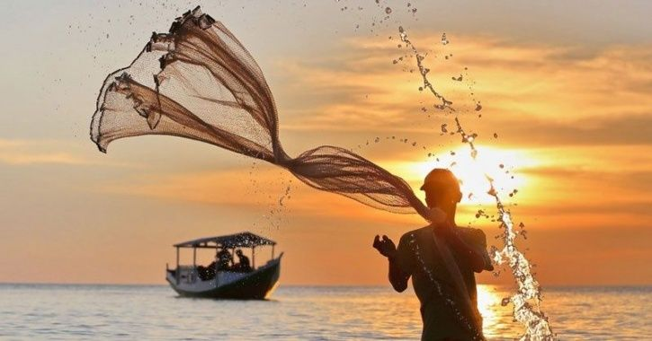
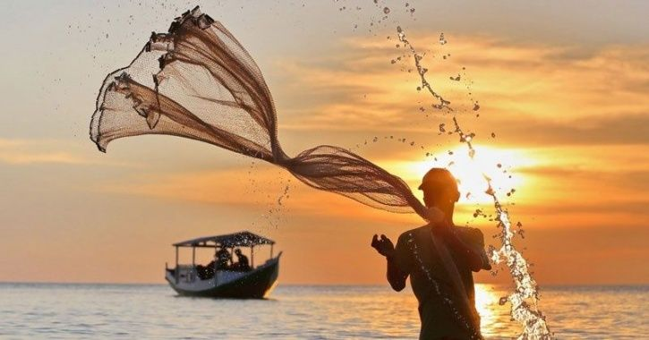

Indonesia maritim
Indonesia memiliki luas lautan lebih besar dibandingkan luas daratan. Hal ini menjadi tantangan tersendiri bagi Indonesia memajukan maritimnya. Luasnya lautan Indonesia dapat dilihat dari adanya garis pantai di hampir setiap pulau di Indonesia. Panjang yang diukur kurang lebih 81.000 Km garis pantai untuk satu Indonesia.
Indonesia yang memiliki luas lautan cukup besar, menjadikan jumlah ikan yang berlimpah. Indonesia memiliki lebih dari 7 ribu jenis ikan laut, baik untuk dikonsumsi maupun ikan hias. Tak hanya jenis ikan, kerang-kerangan, rumput laut, dan tentunya karang yang menjadi tempat tinggal ikan laut sangat berlimpah di seluruh laut di Indonesia.


Ekspor Jawa Timur
Dalam bidang kemaritiman di Indonesia, salah satunya provinsi di Jawa Timur yang berkontribusi di dalam ekspor perikanan internasional. Jawa Timur juga memiliki beragam hasil laut yang melimpah yang dapat diekspor ke rana internasional. Provinsi Jawa Timur mencatat ekspor di sektor perikanan yang nilainya mencapai 14,4 juta dolar Amerika Serikat ke negara di Pasar Asia, Eropa, hingga Amerika.
Hal ini membuktikan Indonesia sangat berlimpah dalam bidang kemaritiman atau hasil tangkapan laut untuk di jual ke negara lain maupun negara sendiri. Sehingga di era new normal ini, Indonesia dapat menjalankan ekonominya dengan baik dan para penjual ikan pasar atau pemilik UMKM (Usaha Mikro, Kecil, Menengah) dapat mendapatkan penghasilan di era new normal.
hasil laut jatim

16%
Ikan Bandeng

65%
Rumput laut

10%
Udang
9%
Ikan Campuran

1%
Kepiting
1.044.600 TON
Total hasil laut
kota penghasil terbanyak
Sumenep
Kabupaten Sumenep merupakan daerah yang memiliki potensi rumput laut terbesar di Jawa Timur. Wilayah pantai yang landai, ekosistem terumbu karang yang bagus sangat mendukung terhadap pertumbuhan laut.

Gresik
Kabupaten Gresik merupakan salah satu pusat produksi ikan bandeng di Indonesia. Wilayah di kawasan timur laut Jawa ini menghasilkan bandeng sekitar 40 - 90 ribu Ton per tahun. Di tiap idul fitri warga menggelar Pasar Bandeng selama 3 hari.
Sidoarjo
Kabupaten Sidoarjo, sesuai dengan logo Sidoarjo itu sendiri, daerah ini merupakan penghasil ikan bandeng dan udang yang melimpah. Produksi kedua komoditas ini mencapai 85% dan 70% di antaranya merupakan produksi bandeng.

Fisherman Quotes
Many men go fishing their whole lives without knowing that it is not the fish they are looking for
— Henry David Thoreau